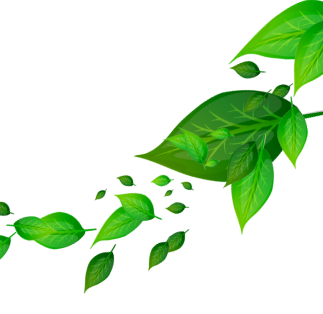

Соус томатный "Мой соус"
Состав: паста томатная, вода питьевая, сахар-песок, соль поваренная пищевая, лук
репчатый свежий, загуститель, чеснок, карри, перец красный молотый, майоран, кислота
уксусная пищевая, консерванты.
